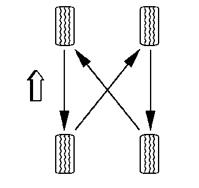

轮胎换位
经常转动轮胎和车轮，使磨损均衡。参见
保养计划
。除定期换位外，一旦观察到轮胎磨损不均匀，应将轮胎和车轮换位。
子午线轮胎通常在肩部，尤其是在前肩部磨损快。子午线轮胎在非传动位置可能形成不规则磨损图案，这可能会产生轮胎噪声。这使得定期换位是非常必要的。
参见
轮胎和车轮的拆卸和安装
。

一直使用四轮换位。换位后，检查车轮螺母是否达到规定扭矩。然后，设置轮胎压力。
轮胎旋转后，必须重设轮胎气压传感器。参见“轮胎气压指示灯传感器的读入”。